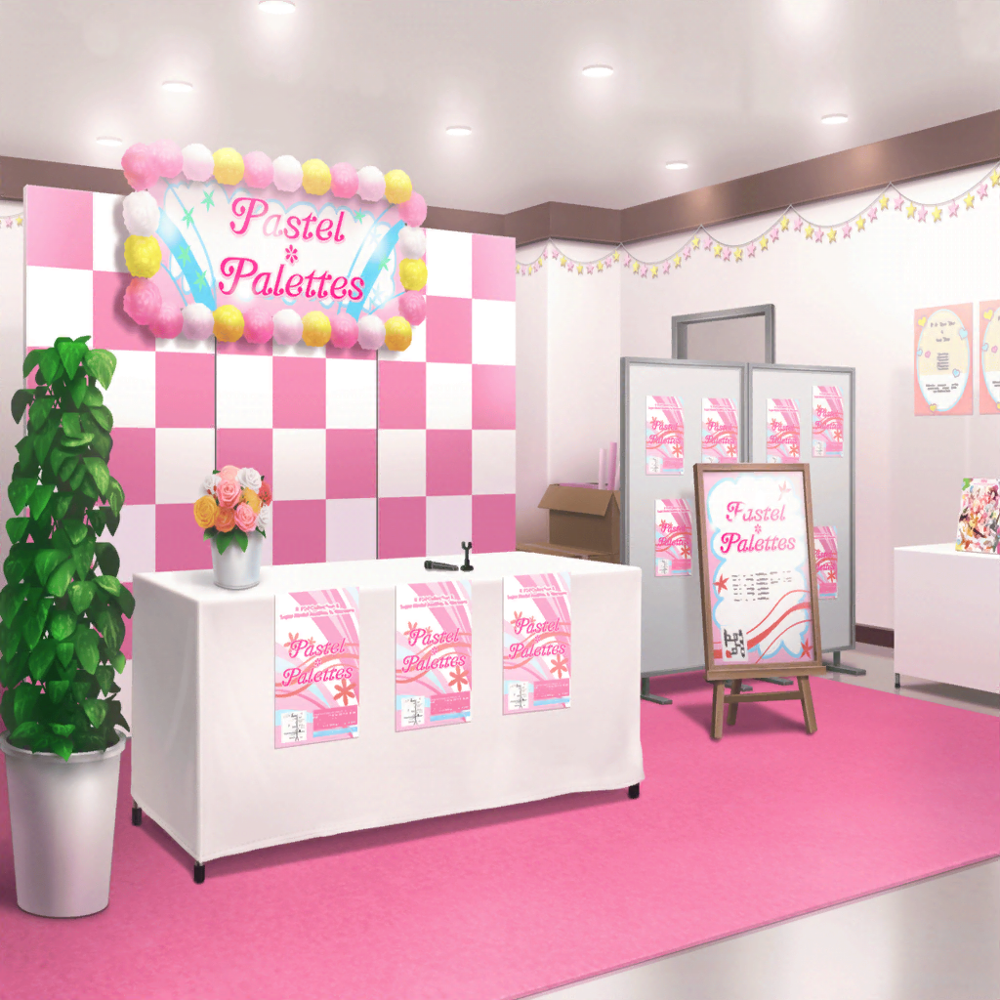

イベント当日
イベント会場
彩
みなさーん！ 今日は、Pastel＊Palettesの
リリースイベントに来てくれて、ありがとうございまーす！！
司会
本日は新曲のお話などなど色々なことを
お話していきたいと思います。よろしくお願いします！
一同
よろしくお願いしますっ！
司会
今回このようなイベントをやるのははじめてですが、
みなさんいかがですか？
千聖
ファンのみなさんとこんなに近い距離でお会いできるのは
はじめてなので、とっても嬉しく思っています♪
麻弥
じ、ジブンはすごく緊張してます……！
彩
わ、私みょ……あ、か、噛んじゃった……
イヴ
アヤさん、大丈夫ですか？
落ち着いて、リラックスです！
日菜
あははっ、でも彩ちゃんって感じがする〜！
彩
も、もう日菜ちゃん〜！
司会
丸山さんはアイドル研究生、白鷺さんは現役の女優、
若宮さんはモデル、大和さんはスタジオミュージシャン……など
みなさん色々な経歴をお持ちですが……
司会
氷川さんは、元々プロなどを目指していたわけでは
ないんですよね？
日菜
うん！ そうだよー。あたしはおねーちゃんがきっかけで
ギターをはじめて〜……
日菜
なんとなく面白そうだからパスパレのオーディションに
応募したんだよね。それで、受かったから入ったの！
イヴ
ヒナさんは、なんでもすぐにできてしまうんです！
とってもすごい人なんですよ！
日菜
えっへへー。まあね！
だから、最初は彩ちゃんがどうして練習しても全然できないのか、
わかんなかったんだ。ま、今もなんだけど！
司会
お、おおっと……！？
これはまた爆弾発言が飛び出しましたね！？
ファン
日菜ちゃんって、思った以上にヤバいね……
今の発言、事務所的にアリなの？
彩
ひ、日菜ちゃん〜！
それはもう言わないでよ〜！
麻弥
あはは……ジブン達も最初、日菜さんの言動にはビックリ
したんですが、今となってはこうじゃなきゃ
日菜さん！ って思えないくらいですね
彩
それはあるかも！ 日菜ちゃん、まわりの意見とか個人的な感情に
流されないでスパっと意見を言ってくれるから
彩
日菜ちゃんのそういうところに、ハッとさせられたりすることって
あるよね
千聖
そうね。私も日菜ちゃんの言葉に動かされたことがあるわ
日菜
んー、でも、あたしって他人の気持ちがわかんないからこそ、
言っちゃうことがあるのかもな〜。千聖ちゃんのこと、
怒らせちゃった時もそうだったし
司会
な、なんだか氷川さんはファンのみなさんが思っている以上に
個性的かもしれませんね……！？
日菜
彩ちゃんのことは今でもわかんない！ でもね、麻弥ちゃんが、
彩ちゃんはあたしじゃないからできないことがあるんだって
教えてくれたの
日菜
麻弥ちゃんの言葉がきっかけで、あたしは、
あたしじゃない他人に興味が湧いたの！
あたしじゃない人達って、わかんないことだらけで！
日菜
彩ちゃんみたいな人は特にさ！
だから、パスパレってすっごく楽しい！
千聖
今日はたくさん、日菜ちゃんじゃない人達に会えるから
楽しみだったのよね？
日菜
うん、そうなの！
あたし、こういうお渡し会ってよくわかんなくてさ。
なんでみんな来てくれるんだろう？ って思って……
日菜
あ、目があったそこの人！ ねえ、なんで？
今日、なんできたの？
ファン
え！？ えっと……
彩
ひ、日菜ちゃん！
それはこのあとのお渡し会で聞くことだよ〜！
日菜
えー？ いーじゃん、今聞いても〜
麻弥
だ、段取りというものがありますから……！
司会
大和さん、段取りをとるのは私の仕事ですから
麻弥
はっ！ す、すみません！ ジブン、つい……
イヴ
マヤさん、ドンマイです！
千聖
……と、私達のそれぞれの立ち位置は今のやりとりで
だいたいわかっていただけたんじゃないでしょうか？
みなさん、どうですかー？
ファン
おもしろーい！
ファン
かわいー！
千聖
ありがとうございます♪
司会
白鷺さん、ありがとうございます！
それでは、もう少し氷川さん以外のメンバーのみなさんの
経歴も詳しく伺っていきたいと思います！
司会
では、丸山さんから。丸山さんはアイドル研究生として
しばらく活動されていたんですよね？
彩
は、はいっ！！
えっと、私がアイドル研究生をはじめたのは……
日菜
（みんな、彩ちゃんの話を食い入るように聞いてる……
おもしろいな〜。それだけ、お客さんも彩ちゃんに興味があるって
ことだよね）
日菜
（あたしも、お客さんにいろんなこと聞いてみたいな。
……ん〜、楽しみ！ 早くお渡し会にならないかなあ〜！）